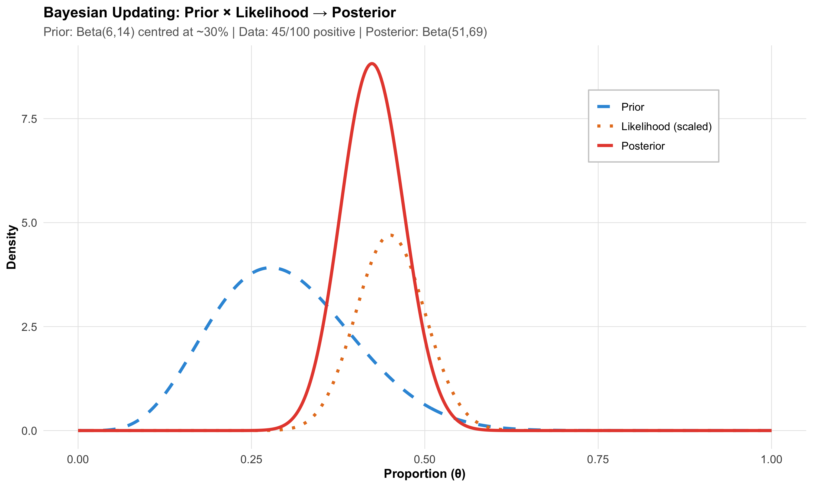
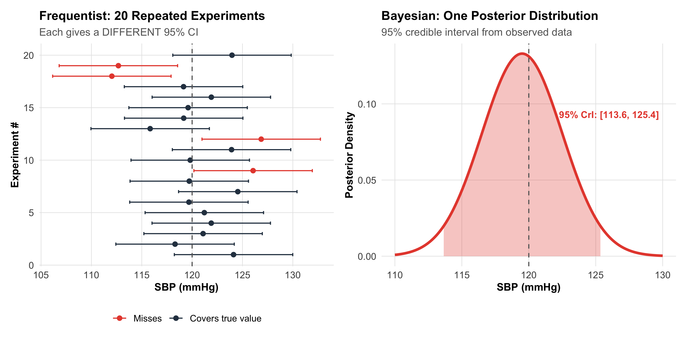
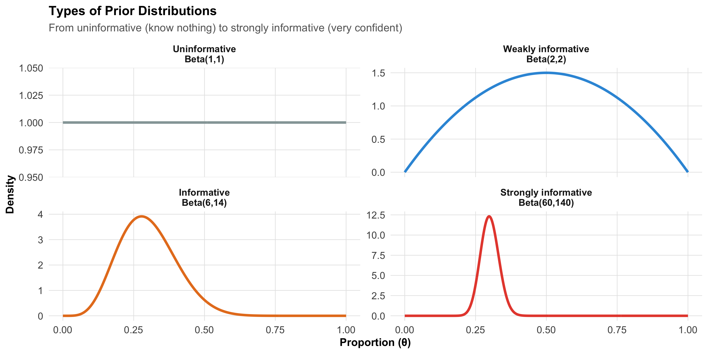
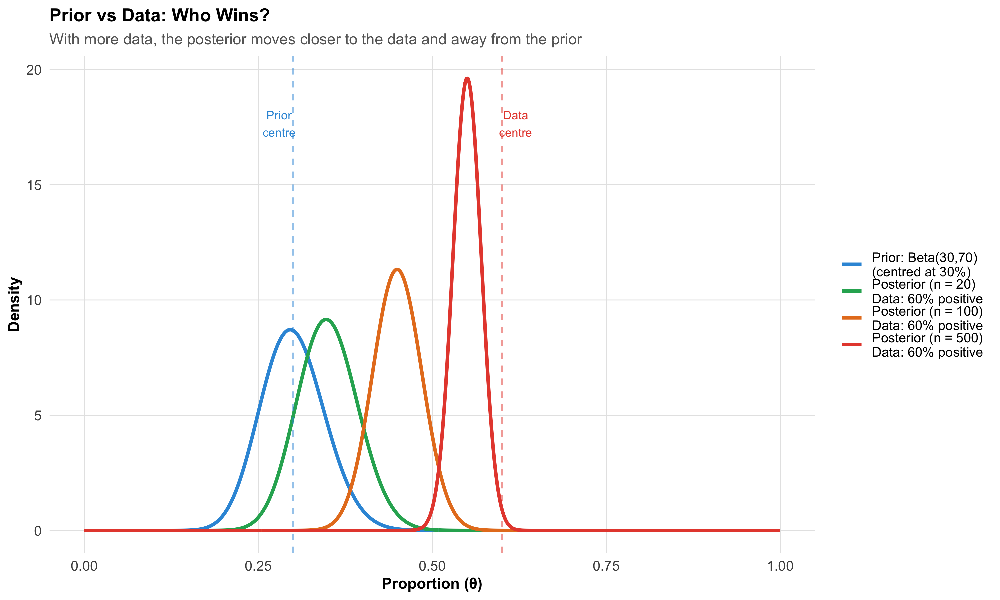
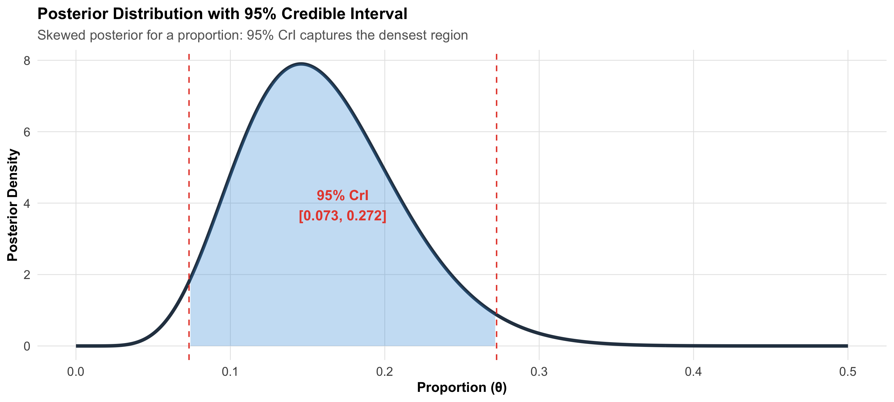
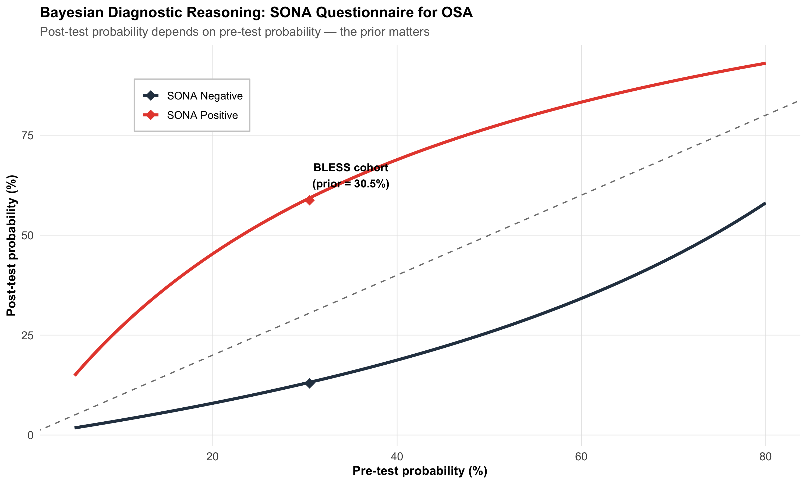
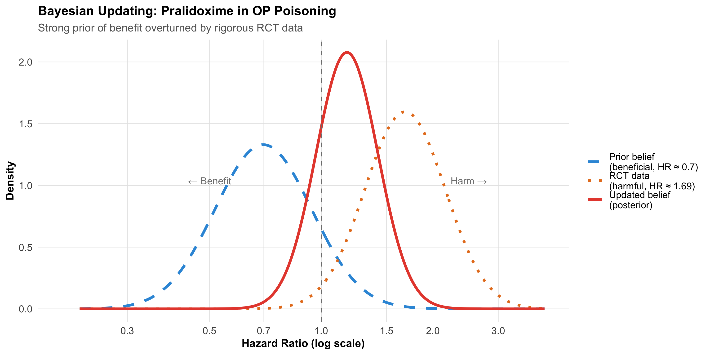
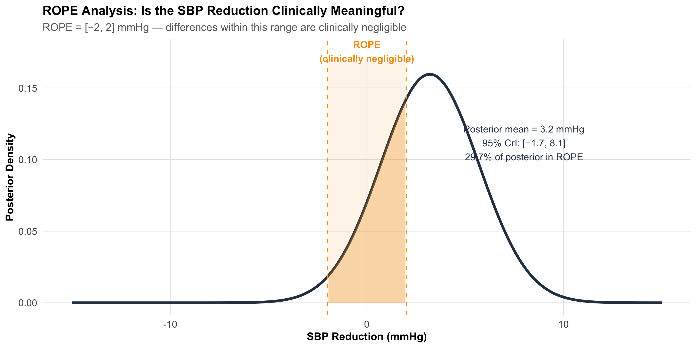

Explain the Bayesian framework: prior, likelihood, and posterior
Distinguish between frequentist and Bayesian approaches to inference
Interpret a posterior distribution and its credible interval
Understand how prior choice affects conclusions
Apply Bayesian thinking to clinical decision-making scenarios
Calculate post-test probability using Bayes’ theorem and likelihood ratios
Recognise when Bayesian methods offer advantages over frequentist approaches
Interpret Bayesian results in published medical literature
15.2 Clinical Hook
You are a physician in a primary health centre in rural Madhya Pradesh. A 48-year-old overweight man presents with daytime sleepiness, loud snoring (reported by his wife), and morning headaches. You suspect obstructive sleep apnoea (OSA).
The BLESS cohort (Pakhare, Joshi A et al., AIIMS Bhopal, 2024) studied 1,015 adults with gold-standard polysomnography and found that 30.5% had moderate-to-severe OSA. This is your prior probability — before any test, roughly 1 in 3 adults in this population has the condition.
Now you administer the SONA questionnaire — a gender-specific screening tool developed and validated from the same BLESS cohort (Joshi A, Goyal A, Pakhare A et al., J Sleep Res 2025). At a cutoff of 5, SONA has:
Sensitivity: 73%
Specificity: 78%
Your patient scores 6 (positive). What is the probability he actually has moderate-to-severe OSA?
This is Bayesian reasoning in action — you started with a prior belief (30.5%), observed new evidence (positive SONA score), and now need to compute the posterior probability. This is exactly what Bayes’ theorem does.
References
Pakhare A, Joshi A, et al. Prevalence and association analysis of obstructive sleep apnea in India: Results from BLESS cohort. Sleep Med 2024.
Joshi A, Goyal A, Pakhare A, et al. Development and Validation of the SONA Questionnaire: A Gender-Specific Screening Tool for Moderate-to-Severe OSA. J Sleep Res 2025.
15.3 Part 1: What Is Bayesian Thinking?
The Core Idea
Every clinician already thinks like a Bayesian:
Before the test: You have a belief about the diagnosis (pre-test probability)
The test result: The data either supports or weakens that belief
After the test: You update your belief (post-test probability)
prior<-0.305sens<-0.73spec<-0.78# Post-test probability for positive testpost_pos<-(sens*prior)/(sens*prior+(1-spec)*(1-prior))# Post-test probability for negative testpost_neg<-((1-sens)*prior)/((1-sens)*prior+spec*(1-prior))# Likelihood ratioslr_pos<-sens/(1-spec)lr_neg<-(1-sens)/speccalc_df<-tibble( Step =c("Prior probability (prevalence)","Sensitivity","Specificity","LR+ (sensitivity / (1 − specificity))","LR− ((1 − sensitivity) / specificity)","**Post-test probability (test positive)**","Post-test probability (test negative)"), Value =c(paste0(round(prior*100, 1), "%"),paste0(round(sens*100), "%"),paste0(round(spec*100), "%"),round(lr_pos, 2),round(lr_neg, 2),paste0("**", round(post_pos*100, 1), "%**"),paste0(round(post_neg*100, 1), "%")))kable(calc_df, format ="html", escape =FALSE)%>%kable_styling(full_width =FALSE, font_size =14)%>%row_spec(0, background ="#2c3e50", color ="white", bold =TRUE)%>%row_spec(6, background ="#d4edda", bold =TRUE)
Step
Value
Prior probability (prevalence)
30.5%
Sensitivity
73%
Specificity
78%
LR+ (sensitivity / (1 − specificity))
3.32
LR− ((1 − sensitivity) / specificity)
0.35
**Post-test probability (test positive)**
**59.3%**
Post-test probability (test negative)
13.2%
The prior probability was 30.5%. After a positive SONA screen, it rises to 59.3%. The test has shifted your belief upward, but has not made the diagnosis certain. You still need confirmatory polysomnography.
The Bayesian Insight
The same test result means different things depending on the prior. In a population with 5% OSA prevalence, a positive SONA would give a post-test probability of only 14.9%. The prior matters as much as the test.
15.4 Part 2: The Bayesian Framework — Prior, Likelihood, Posterior
The Three Components
Code
# Illustrate prior, likelihood, posterior for a proportionx_bf<-seq(0, 1, length.out =500L)# Prior: Beta(6, 14) — prior belief centred around 30%prior_d<-dbeta(x_bf, 6, 14)# Likelihood: observed 45 positives out of 100like_d<-dbeta(x_bf, 45+1, 55+1)# kernel of binomial likelihoodlike_d<-like_d/max(like_d)*max(prior_d)*1.2# scale for visibility# Posterior: Beta(6 + 45, 14 + 55) = Beta(51, 69)post_d<-dbeta(x_bf, 51, 69)df_bayes<-bind_rows(tibble(theta =x_bf, density =prior_d, component ="Prior"),tibble(theta =x_bf, density =like_d, component ="Likelihood (scaled)"),tibble(theta =x_bf, density =post_d, component ="Posterior"))%>%mutate(component =fct_inorder(component))ggplot(df_bayes, aes(x =theta, y =density, color =component, linetype =component))+geom_line(linewidth =1.3)+scale_color_manual(values =c("Prior"="#3498db", "Likelihood (scaled)"="#e67e22","Posterior"="#e74c3c"))+scale_linetype_manual(values =c("Prior"="dashed", "Likelihood (scaled)"="dotted","Posterior"="solid"))+labs(title ="Bayesian Updating: Prior × Likelihood → Posterior", subtitle ="Prior: Beta(6,14) centred at ~30% | Data: 45/100 positive | Posterior: Beta(51,69)", x ="Proportion (θ)", y ="Density", color =NULL, linetype =NULL)+theme_clean()+theme(legend.position =c(0.8, 0.8), legend.background =element_rect(fill ="white", color ="gray80"))

Reading This Plot
Blue dashed line (Prior) — Your belief before seeing the data. Centred around 30%, but wide — reflecting uncertainty
Orange dotted line (Likelihood) — What the data say on their own. 45 out of 100 were positive, so the data peak at 45%
Red solid line (Posterior) — Your updated belief. It’s a compromise between prior and data, pulled toward the data but not fully
The Key Principle
The posterior is always a compromise between the prior and the data. With more data, the posterior increasingly reflects the data and less the prior. With little data, the prior dominates. This is why sample size still matters in Bayesian statistics.
15.5 Part 3: Frequentist vs Bayesian — What’s the Difference?
The Philosophical Divide
Frequentist
Bayesian
What is probability?
Long-run frequency of events
Degree of belief
Parameters
Fixed but unknown
Random variables with distributions
Data
Random (comes from sampling)
Fixed (what you observed)
Prior information
Not formally used
Explicitly incorporated
Result
p-value, confidence interval
Posterior distribution, credible interval
Interpretation
“If we repeated this experiment infinitely…”
“Given the data we observed…”
The Confidence Interval Problem
A frequentist 95% confidence interval does NOT mean “there is a 95% probability the true value is in this interval.” It means: “If we repeated this study infinitely, 95% of computed intervals would contain the true value.”
A Bayesian 95% credible interval means exactly what you think: “Given the data, there is a 95% probability the true value lies in this interval.”
Code
# Show multiple confidence intervals (frequentist) vs one credible interval (Bayesian)set.seed(42)true_mean<-120# true SBPn<-25n_sims<-20freq_sims<-tibble( sim =1:n_sims, mean =rnorm(n_sims, true_mean, 15/sqrt(n)), se =15/sqrt(n))%>%mutate(lo =mean-1.96*se, hi =mean+1.96*se, covers =lo<=true_mean&hi>=true_mean)p_freq<-ggplot(freq_sims, aes(y =sim))+geom_point(aes(x =mean, color =covers), size =2)+geom_errorbarh(aes(xmin =lo, xmax =hi, color =covers), height =0.3)+geom_vline(xintercept =true_mean, linetype ="dashed", color ="gray40")+scale_color_manual(values =c("TRUE"="#2c3e50", "FALSE"="#e74c3c"), labels =c("TRUE"="Covers true value", "FALSE"="Misses"))+labs(title ="Frequentist: 20 Repeated Experiments", subtitle ="Each gives a DIFFERENT 95% CI", x ="SBP (mmHg)", y ="Experiment #", color =NULL)+theme_clean()+theme(legend.position ="bottom")# Bayesian posteriortheta_b<-seq(110, 130, length.out =500)post_sbp<-dnorm(theta_b, 119.5, 15/sqrt(n))# posterior from one studycri_lo<-qnorm(0.025, 119.5, 15/sqrt(n))cri_hi<-qnorm(0.975, 119.5, 15/sqrt(n))df_post<-tibble(theta =theta_b, density =post_sbp)p_bayes<-ggplot(df_post, aes(x =theta, y =density))+geom_line(linewidth =1.3, color ="#e74c3c")+geom_area(data =df_post%>%filter(theta>=cri_lo&theta<=cri_hi),aes(x =theta, y =density), fill ="#e74c3c", alpha =0.3)+geom_vline(xintercept =true_mean, linetype ="dashed", color ="gray40")+annotate("text", x =126, y =max(post_sbp)*0.7, label =paste0("95% CrI: [", round(cri_lo,1), ", ", round(cri_hi,1), "]"), color ="#e74c3c", fontface ="bold", size =3.5)+labs(title ="Bayesian: One Posterior Distribution", subtitle ="95% credible interval from observed data", x ="SBP (mmHg)", y ="Posterior Density")+theme_clean()p_freq+p_bayes+plot_layout(widths =c(1, 1))

15.6 Part 4: Choosing a Prior
Types of Priors
The prior encodes what you believed before seeing the data. The choice of prior is the most debated aspect of Bayesian statistics.
Code
n_pts<-500Lx_vals<-seq(0, 1, length.out =n_pts)d1<-tibble(theta =x_vals, density =dbeta(x_vals, 1, 1), type ="Uninformative\nBeta(1,1)")d2<-tibble(theta =x_vals, density =dbeta(x_vals, 2, 2), type ="Weakly informative\nBeta(2,2)")d3<-tibble(theta =x_vals, density =dbeta(x_vals, 6, 14), type ="Informative\nBeta(6,14)")d4<-tibble(theta =x_vals, density =dbeta(x_vals, 60, 140), type ="Strongly informative\nBeta(60,140)")priors_df<-bind_rows(d1, d2, d3, d4)%>%mutate(type =fct_inorder(type))ggplot(priors_df, aes(x =theta, y =density, color =type))+geom_line(linewidth =1.2)+facet_wrap(~type, scales ="free_y")+scale_color_manual(values =c("#95a5a6", "#3498db", "#e67e22", "#e74c3c"))+labs(title ="Types of Prior Distributions", subtitle ="From uninformative (know nothing) to strongly informative (very confident)", x ="Proportion (θ)", y ="Density")+theme_clean()+theme(legend.position ="none", strip.text =element_text(face ="bold"))

Prior Type
When to Use
Example
Uninformative (flat)
No prior knowledge; let data speak
New drug with no previous studies
Weakly informative
Gentle constraints to avoid absurd values
Treatment effect “probably between −50% and +50%”
Informative
Prior studies give reasonable estimates
OSA prevalence ~30% from BLESS cohort
Strongly informative
Very confident prior knowledge
Disease prevalence in large epidemiological surveys
The Prior–Data Tug-of-War
Code
# What happens when prior and data disagree?x_pc<-seq(0, 1, length.out =500L)conflict_df<-bind_rows(tibble(theta =x_pc, density =dbeta(x_pc, 30, 70), label ="Prior: Beta(30,70)\n(centred at 30%)"),tibble(theta =x_pc, density =dbeta(x_pc, 30+12, 70+8), label ="Posterior (n = 20)\nData: 60% positive"),tibble(theta =x_pc, density =dbeta(x_pc, 30+60, 70+40), label ="Posterior (n = 100)\nData: 60% positive"),tibble(theta =x_pc, density =dbeta(x_pc, 30+300, 70+200), label ="Posterior (n = 500)\nData: 60% positive"))%>%mutate(label =fct_inorder(label))post_n500<-dbeta(x_pc, 30+300, 70+200)# for annotationggplot(conflict_df, aes(x =theta, y =density, color =label))+geom_line(linewidth =1.2)+scale_color_manual(values =c("#3498db", "#27ae60", "#e67e22", "#e74c3c"))+geom_vline(xintercept =0.30, linetype ="dashed", color ="#3498db", alpha =0.5)+geom_vline(xintercept =0.60, linetype ="dashed", color ="#e74c3c", alpha =0.5)+annotate("text", x =0.28, y =max(post_n500)*0.9, label ="Prior\ncentre", color ="#3498db", size =3)+annotate("text", x =0.62, y =max(post_n500)*0.9, label ="Data\ncentre", color ="#e74c3c", size =3)+labs(title ="Prior vs Data: Who Wins?", subtitle ="With more data, the posterior moves closer to the data and away from the prior", x ="Proportion (θ)", y ="Density", color =NULL)+theme_clean()+theme(legend.position ="right")

Lesson: With enough data, the prior barely matters. With small samples, it matters a lot. This is why Bayesian and frequentist analyses usually agree for large studies but can diverge for small ones.
15.7 Part 5: Credible Intervals vs Confidence Intervals
What Clinicians Actually Want
When a cardiologist reads “mean SBP reduction = 8 mmHg (95% CI: 3–13)”, they typically think: “There’s a 95% chance the true reduction is between 3 and 13.”
This interpretation is wrong for a frequentist confidence interval but correct for a Bayesian credible interval.
95% Confidence Interval
95% Credible Interval
Correct interpretation
95% of similarly constructed intervals contain the true value
95% probability the true value lies within this interval
What it says about THIS interval
Either contains the true value or doesn’t (we don’t know)
95% probability it contains the true value
Prior information
Not used
Incorporated
Computation
From sampling distribution
From posterior distribution
Practical Implication
For most well-powered studies with uninformative priors, the Bayesian credible interval and the frequentist confidence interval give nearly identical numbers. The difference is in interpretation, not usually in the numbers themselves.
Highest Density Interval (HDI)
The most common Bayesian interval is the 95% Highest Density Interval (HDI) — the narrowest interval containing 95% of the posterior probability. For symmetric posteriors, the HDI is centred on the posterior mean. For skewed posteriors (common with proportions near 0 or 1), the HDI captures the densest 95% of probability.
Code
theta_hdi<-seq(0, 0.5, length.out =500)post_skew<-dbeta(theta_hdi, 8, 42)# Skewed posterior (low proportion)# Approximate HDIhdi_lo<-qbeta(0.025, 8, 42)hdi_hi<-qbeta(0.975, 8, 42)df_hdi<-tibble(theta =theta_hdi, density =post_skew)ggplot(df_hdi, aes(x =theta, y =density))+geom_line(linewidth =1.3, color ="#2c3e50")+geom_area(data =df_hdi%>%filter(theta>=hdi_lo&theta<=hdi_hi), fill ="#3498db", alpha =0.3)+geom_vline(xintercept =c(hdi_lo, hdi_hi), linetype ="dashed", color ="#e74c3c")+annotate("text", x =(hdi_lo+hdi_hi)/2, y =max(post_skew)*0.5, label =paste0("95% CrI\n[", round(hdi_lo, 3), ", ", round(hdi_hi, 3), "]"), fontface ="bold", color ="#e74c3c", size =4)+labs(title ="Posterior Distribution with 95% Credible Interval", subtitle ="Skewed posterior for a proportion: 95% CrI captures the densest region", x ="Proportion (θ)", y ="Posterior Density")+theme_clean()

15.8 Part 6: Bayesian Hypothesis Testing — The Bayes Factor
Beyond p-values
In frequentist statistics, we get a p-value: the probability of data as extreme as observed, given the null is true. The p-value does not tell you the probability the null is true.
The Bayes factor (BF) directly compares two hypotheses:
bf_comp<-tibble( Scenario =c("Large study, tiny effect (n = 10,000, d = 0.03)","Small study, large effect (n = 20, d = 0.9)","Medium study, no effect (n = 200, d = 0.0)"), `p-value` =c("p < 0.001 (significant!)", "p = 0.06 (not significant)", "p = 0.95"), `Bayes Factor` =c("BF₁₀ ≈ 2 (weak evidence)", "BF₁₀ ≈ 8 (moderate evidence)", "BF₁₀ ≈ 0.1 (evidence FOR null)"), Verdict =c("p says significant; BF says the evidence is weak — the effect is trivially small","p says not significant; BF says moderate evidence for a real effect — just underpowered","p says nothing (absence of evidence); BF quantifies evidence FOR the null"))kable(bf_comp, format ="html")%>%kable_styling(full_width =TRUE, font_size =13)%>%row_spec(0, background ="#2c3e50", color ="white", bold =TRUE)
Scenario
p-value
Bayes Factor
Verdict
Large study, tiny effect (n = 10,000, d = 0.03)
p < 0.001 (significant!)
BF₁₀ ≈ 2 (weak evidence)
p says significant; BF says the evidence is weak — the effect is trivially small
Small study, large effect (n = 20, d = 0.9)
p = 0.06 (not significant)
BF₁₀ ≈ 8 (moderate evidence)
p says not significant; BF says moderate evidence for a real effect — just underpowered
Medium study, no effect (n = 200, d = 0.0)
p = 0.95
BF₁₀ ≈ 0.1 (evidence FOR null)
p says nothing (absence of evidence); BF quantifies evidence FOR the null
The Key Advantage
A p-value can never provide evidence for the null hypothesis — it can only fail to reject it. A Bayes factor can quantify how much the data support the null. This is critical for equivalence testing: does this generic drug work the same as the branded one?
15.9 Part 7: Clinical Applications of Bayesian Methods
1. Diagnostic Reasoning (You Already Do This)
Every time you order a diagnostic test, you are doing Bayesian updating:
Code
# SONA screening at different pre-test probabilitiesprev_range<-seq(0.05, 0.80, by =0.01)sens<-0.73spec<-0.78post_pos<-(sens*prev_range)/(sens*prev_range+(1-spec)*(1-prev_range))post_neg<-((1-sens)*prev_range)/((1-sens)*prev_range+spec*(1-prev_range))diag_df<-tibble( prior =rep(prev_range, 2), posterior =c(post_pos, post_neg), result =rep(c("SONA Positive", "SONA Negative"), each =length(prev_range)))bless_pts<-tibble( x =c(30.5, 30.5), y =c(post_pos[which.min(abs(prev_range-0.305))],post_neg[which.min(abs(prev_range-0.305))])*100, result =c("SONA Positive", "SONA Negative"))ggplot(diag_df, aes(x =prior*100, y =posterior*100, color =result))+geom_line(linewidth =1.3)+geom_abline(slope =1, intercept =0, linetype ="dashed", color ="gray50")+scale_color_manual(values =c("SONA Positive"="#e74c3c", "SONA Negative"="#2c3e50"))+geom_point(data =bless_pts, aes(x =x, y =y), size =4, shape =18)+annotate("text", x =35, y =65, label ="BLESS cohort\n(prior = 30.5%)", fontface ="bold", size =3.5)+labs(title ="Bayesian Diagnostic Reasoning: SONA Questionnaire for OSA", subtitle ="Post-test probability depends on pre-test probability — the prior matters", x ="Pre-test probability (%)", y ="Post-test probability (%)", color =NULL)+theme_clean()+theme(legend.position =c(0.2, 0.85), legend.background =element_rect(fill ="white", color ="gray80"))

Reading this plot:
The dashed diagonal = no test (post-test = pre-test)
Red line (positive SONA) = always above the diagonal — a positive result increases the probability of OSA
Black line (negative SONA) = always below the diagonal — a negative result decreases the probability
The diamond marks the BLESS cohort prevalence (30.5%) — where our clinical hook sits
2. Adaptive Clinical Trials
Traditional RCTs fix the sample size in advance. Bayesian adaptive trials allow:
Interim analyses that update the probability of treatment benefit in real time
Response-adaptive randomisation — allocate more patients to the arm that appears better
Early stopping when posterior probability of benefit or futility crosses a threshold
Indian Example
The ARMY COVID trial (Rajnish Joshi et al., AIIMS Bhopal) tested Mycobacterium w in severe COVID-19. An adaptive Bayesian design could have been used here: start with a prior based on Mw’s immunomodulatory evidence in other conditions, then update as COVID-specific data accumulate. If the posterior probability of benefit drops below 5% at interim analysis, stop for futility — saving patients from an ineffective treatment.
3. Rare Disease Inference
With very few patients, frequentist methods often fail (wide CIs, non-significant results). Bayesian methods can incorporate prior knowledge from:
Animal studies
Related diseases
Expert opinion
Previous case series
This gives more informative estimates even with small samples.
4. Meta-Analysis (Bayesian)
The random-effects meta-analysis model from Module 13 can be formulated as a Bayesian model:
Prior on overall effect — e.g., Normal(0, large variance) for uninformative
Prior on between-study variance (τ²) — e.g., Half-Cauchy(0, 0.5)
Posterior — updated distributions for the overall effect AND the heterogeneity
The Bayesian meta-analysis naturally handles uncertainty in τ² (heterogeneity), which frequentist methods estimate as a single point.
15.10 Part 8: When Prior and Data Disagree — The Pralidoxime Story
In Module 13, we discussed the pralidoxime RCT (Eddleston, Joshi R et al., PLoS Med 2009). This is a powerful example of Bayesian updating gone right.
The prior (before 2009): Decades of observational evidence and clinical experience suggested pralidoxime benefits organophosphorus poisoning patients. A clinician in 2008 might have had a strong prior: “P(pralidoxime beneficial) ≈ 80%.”
The data (2009 RCT): In a rigorous double-blind RCT (n = 235), pralidoxime-treated patients had higher mortality (24.8% vs 15.8%; adjusted HR = 1.69).
The posterior: A Bayesian clinician must now update their belief. Even with a strong prior of 80% benefit, the RCT data would dramatically shift the posterior toward no benefit (or harm). The stronger the prior, the more data needed to overturn it — but a well-powered, well-designed RCT is exactly the kind of strong data that should update beliefs.
Code
# Conceptual: prior and posterior for treatment effectx_pral<-seq(-1.5, 1.5, length.out =500L)# Posterior: compromisepost_var<-1/(1/0.3^2+1/0.25^2)post_mean<-post_var*(-0.36/0.3^2+0.52/0.25^2)pral_df<-bind_rows(tibble(theta =x_pral, density =dnorm(x_pral, -0.36, 0.3), component ="Prior belief\n(beneficial, HR \u2248 0.7)"),tibble(theta =x_pral, density =dnorm(x_pral, 0.52, 0.25), component ="RCT data\n(harmful, HR \u2248 1.69)"),tibble(theta =x_pral, density =dnorm(x_pral, post_mean, sqrt(post_var)), component ="Updated belief\n(posterior)"))%>%mutate(component =fct_inorder(component))post_pral<-dnorm(x_pral, post_mean, sqrt(post_var))# for annotationggplot(pral_df, aes(x =exp(theta), y =density, color =component, linetype =component))+geom_line(linewidth =1.3)+geom_vline(xintercept =1, linetype ="dashed", color ="gray50")+scale_color_manual(values =c("#3498db", "#e67e22", "#e74c3c"))+scale_linetype_manual(values =c("dashed", "dotted", "solid"))+scale_x_continuous(breaks =c(0.3, 0.5, 0.7, 1, 1.5, 2, 3), trans ="log", limits =c(0.2, 4))+annotate("text", x =0.5, y =max(post_pral)*0.5, label ="← Benefit", color ="gray50", size =3.5)+annotate("text", x =2.5, y =max(post_pral)*0.5, label ="Harm →", color ="gray50", size =3.5)+labs(title ="Bayesian Updating: Pralidoxime in OP Poisoning", subtitle ="Strong prior of benefit overturned by rigorous RCT data", x ="Hazard Ratio (log scale)", y ="Density", color =NULL, linetype =NULL)+theme_clean()+theme(legend.position ="right")

Clinical Lesson
Being Bayesian does not mean being stubborn. The point of Bayesian reasoning is to update beliefs when new evidence arrives — including evidence that contradicts your prior. A clinician who refuses to update after strong contradictory evidence is not being Bayesian; they’re being dogmatic.
15.11 Part 9: Common Misconceptions About Bayesian Statistics
Code
misc<-tibble( Misconception =c("Bayesian statistics is subjective and unreliable","The prior can be chosen to get any result you want","Bayesian methods always give different answers than frequentist","You need special software for Bayesian analysis","Bayesian statistics is too complicated for clinical research","A flat prior means no assumptions"), Reality =c("The prior is explicit, transparent, and can be debated. Frequentist methods also make assumptions (e.g., normality, independence) — they're just hidden.","Sensitivity analysis tests how much the prior matters. With enough data, the prior is overwhelmed. Reviewers can check alternative priors.","For large studies with weak priors, results are nearly identical. Differences emerge with small samples or strong priors.","R (brms, rstanarm), Python (PyMC), and JASP (free, GUI-based) all support Bayesian analysis.","The conceptual framework (prior → data → posterior) is simpler than p-value logic. Computation is harder, but software handles it.","A flat prior over [0, 1] says all proportions are equally likely — which IS an assumption. It also doesn't work on unbounded scales (what is 'flat' on [−∞, +∞]?)."))kable(misc, format ="html")%>%kable_styling(full_width =TRUE, font_size =13)%>%row_spec(0, background ="#2c3e50", color ="white", bold =TRUE)%>%column_spec(1, bold =TRUE, width ="35%")
Misconception
Reality
Bayesian statistics is subjective and unreliable
The prior is explicit, transparent, and can be debated. Frequentist methods also make assumptions (e.g., normality, independence) — they're just hidden.
The prior can be chosen to get any result you want
Sensitivity analysis tests how much the prior matters. With enough data, the prior is overwhelmed. Reviewers can check alternative priors.
Bayesian methods always give different answers than frequentist
For large studies with weak priors, results are nearly identical. Differences emerge with small samples or strong priors.
You need special software for Bayesian analysis
R (brms, rstanarm), Python (PyMC), and JASP (free, GUI-based) all support Bayesian analysis.
Bayesian statistics is too complicated for clinical research
The conceptual framework (prior → data → posterior) is simpler than p-value logic. Computation is harder, but software handles it.
A flat prior means no assumptions
A flat prior over [0, 1] says all proportions are equally likely — which IS an assumption. It also doesn't work on unbounded scales (what is 'flat' on [−∞, +∞]?).
15.12 Part 10: Reporting Bayesian Results
When writing or reading a Bayesian analysis, look for:
Code
report<-tibble( Element =c("Prior specification","Justification for prior","Posterior summary","Credible interval","Sensitivity analysis","Model diagnostics","Bayes factor (if applicable)"), `What to report` =c("Distribution family and parameters (e.g., Beta(6, 14))","Why this prior? (literature, expert opinion, uninformative)","Posterior mean/median and SD","95% credible interval (or HDI)","How do results change with different priors?","Convergence (R-hat, effective sample size, trace plots)","BF₁₀ and its interpretation"), `Example` =c("Prior for OSA prevalence: Beta(6, 14), median = 29%","Based on BLESS cohort pilot data (Pakhare et al., 2024)","Posterior mean = 30.5%, SD = 1.5%","95% CrI: [27.6%, 33.4%]","With uninformative prior Beta(1,1): posterior mean = 31.2%","R-hat < 1.01 for all parameters; ESS > 1000","BF₁₀ = 45 (strong evidence for OSA prevalence > 25%)"))kable(report, format ="html")%>%kable_styling(full_width =TRUE, font_size =13)%>%row_spec(0, background ="#2c3e50", color ="white", bold =TRUE)%>%column_spec(1, bold =TRUE, width ="20%")
Element
What to report
Example
Prior specification
Distribution family and parameters (e.g., Beta(6, 14))
Prior for OSA prevalence: Beta(6, 14), median = 29%
Justification for prior
Why this prior? (literature, expert opinion, uninformative)
Based on BLESS cohort pilot data (Pakhare et al., 2024)
Posterior summary
Posterior mean/median and SD
Posterior mean = 30.5%, SD = 1.5%
Credible interval
95% credible interval (or HDI)
95% CrI: [27.6%, 33.4%]
Sensitivity analysis
How do results change with different priors?
With uninformative prior Beta(1,1): posterior mean = 31.2%
BF₁₀ = 45 (strong evidence for OSA prevalence > 25%)
15.13 Part 11: Practical Bayesian Thinking — Decision Rules
Region of Practical Equivalence (ROPE)
Instead of testing whether an effect is exactly zero (frequentist null), Bayesian methods can test whether the effect falls within a Region of Practical Equivalence — a range so small it doesn’t matter clinically.
Code
theta_rope<-seq(-15, 15, length.out =500)post_effect<-dnorm(theta_rope, 3.2, 2.5)df_rope<-tibble(theta =theta_rope, density =post_effect)ggplot(df_rope, aes(x =theta, y =density))+geom_line(linewidth =1.3, color ="#2c3e50")+geom_area(data =df_rope%>%filter(theta>=-2&theta<=2), fill ="#f39c12", alpha =0.3)+geom_vline(xintercept =c(-2, 2), linetype ="dashed", color ="#f39c12")+annotate("rect", xmin =-2, xmax =2, ymin =0, ymax =max(post_effect)*1.05, fill ="#f39c12", alpha =0.1)+annotate("text", x =0, y =max(post_effect)*1.1, label ="ROPE\n(clinically negligible)", fontface ="bold", color ="#f39c12", size =3.5)+annotate("text", x =8, y =max(post_effect)*0.7, label =paste0("Posterior mean = 3.2 mmHg\n95% CrI: [−1.7, 8.1]\n",round(pnorm(2, 3.2, 2.5)*100-pnorm(-2, 3.2, 2.5)*100, 1),"% of posterior in ROPE"), size =3.5, color ="#2c3e50")+labs(title ="ROPE Analysis: Is the SBP Reduction Clinically Meaningful?", subtitle ="ROPE = [−2, 2] mmHg — differences within this range are clinically negligible", x ="SBP Reduction (mmHg)", y ="Posterior Density")+theme_clean()

Decision rules:
If 95% of the posterior is outside the ROPE → clinically meaningful effect
If 95% of the posterior is inside the ROPE → practically equivalent to no effect
If the posterior straddles the ROPE → undecided (need more data)
15.14 Part 12: Summary and Key Takeaways
Code
summary_df<-tibble( Concept =c("Bayesian framework", "Prior", "Likelihood", "Posterior","Credible interval", "Bayes factor", "Prior sensitivity","ROPE", "Clinical diagnostic reasoning"), `Key Point` =c("Prior × Likelihood → Posterior (update beliefs with evidence)","What you believed before seeing data — from flat to highly informative","What the data tell you — drives the posterior when sample is large","Your updated belief — always a compromise between prior and data","95% probability the true value lies within — unlike frequentist CI","Compares evidence for H₁ vs H₀ — can support the null hypothesis","Change the prior; if the conclusion doesn't change, results are robust","Region of practical equivalence — is the effect clinically meaningful?","Pre-test probability × LR = post-test probability — you're already Bayesian"))kable(summary_df, format ="html")%>%kable_styling(full_width =TRUE, font_size =13)%>%row_spec(0, background ="#2c3e50", color ="white", bold =TRUE)%>%column_spec(1, bold =TRUE, width ="25%")
Concept
Key Point
Bayesian framework
Prior × Likelihood → Posterior (update beliefs with evidence)
Prior
What you believed before seeing data — from flat to highly informative
Likelihood
What the data tell you — drives the posterior when sample is large
Posterior
Your updated belief — always a compromise between prior and data
Credible interval
95% probability the true value lies within — unlike frequentist CI
Bayes factor
Compares evidence for H₁ vs H₀ — can support the null hypothesis
Prior sensitivity
Change the prior; if the conclusion doesn't change, results are robust
ROPE
Region of practical equivalence — is the effect clinically meaningful?
Clinical diagnostic reasoning
Pre-test probability × LR = post-test probability — you're already Bayesian
Practical Rules
You’re already Bayesian — every clinical decision uses prior probability + test results
With enough data, the prior doesn’t matter — Bayesian and frequentist converge
For small samples, the prior helps — borrowing strength from previous knowledge
Credible intervals answer the question you actually want — probability of the parameter
Bayes factors can support the null — something p-values cannot do
Always do sensitivity analysis — show results with different priors
ROPE replaces “p < 0.05” with a clinically meaningful decision
15.15 Practice Questions: NEET PG Style MCQs
Q1: Bayes’ Theorem in Diagnosis
A screening test for diabetes has sensitivity 85% and specificity 90%. In a population with 10% diabetes prevalence, a patient tests positive. What is the approximate post-test probability of diabetes?
Code
make_mcq( id ="m14q1", question ="Sensitivity = 85%, Specificity = 90%, Prevalence = 10%. Post-test probability after a positive test?", options =c("85%"="Wrong — 85% is the sensitivity, not the post-test probability. Sensitivity tells you P(Test+ | Disease), not P(Disease | Test+).","90%"="Wrong — 90% is the specificity, not the post-test probability.","answer:About 49%"="Correct! Using Bayes: P = (0.85 × 0.10) / (0.85 × 0.10 + 0.10 × 0.90) = 0.085 / 0.175 ≈ 48.6%. Even with a positive test, there's only about a coin-flip chance of diabetes — because the prevalence is low.","About 10%"="Wrong — the test should change the probability. 10% is the pre-test probability (prevalence), not the post-test probability."))
Sensitivity = 85%, Specificity = 90%, Prevalence = 10%. Post-test probability after a positive test?
✘ A. 85% — Wrong — 85% is the sensitivity, not the post-test probability. Sensitivity tells you P(Test+ | Disease), not P(Disease | Test+).
✘ B. 90% — Wrong — 90% is the specificity, not the post-test probability.
✔ C. About 49% — Correct! Using Bayes: P = (0.85 × 0.10) / (0.85 × 0.10 + 0.10 × 0.90) = 0.085 / 0.175 ≈ 48.6%. Even with a positive test, there’s only about a coin-flip chance of diabetes — because the prevalence is low.
✘ D. About 10% — Wrong — the test should change the probability. 10% is the pre-test probability (prevalence), not the post-test probability.
Q2: Prior vs Posterior
In a Bayesian analysis, the prior is centred at θ = 0.30 and the data suggest θ = 0.60. The sample size is very large (n = 5,000). The posterior will be:
Code
make_mcq( id ="m14q2", question ="Prior centred at 0.30, data suggest 0.60, n = 5,000. Where is the posterior?", options =c("Centred at 0.30 (same as the prior)"="Wrong — with n = 5,000 the data overwhelm the prior. The posterior is driven by the data.","Centred at 0.45 (exactly halfway)"="Wrong — the posterior is not a simple average. With large n, it's pulled strongly toward the data.","answer:Very close to 0.60 (dominated by the data)"="Correct! With 5,000 observations, the data provide far more information than the prior. The posterior is almost entirely determined by the data, regardless of where the prior was centred.","Cannot be determined without knowing the exact prior distribution"="Wrong — while the exact prior matters somewhat, with n = 5,000 the posterior is overwhelmingly driven by the data for any reasonable prior."))
Prior centred at 0.30, data suggest 0.60, n = 5,000. Where is the posterior?
✘ A. Centred at 0.30 (same as the prior) — Wrong — with n = 5,000 the data overwhelm the prior. The posterior is driven by the data.
✘ B. Centred at 0.45 (exactly halfway) — Wrong — the posterior is not a simple average. With large n, it’s pulled strongly toward the data.
✔ C. Very close to 0.60 (dominated by the data) — Correct! With 5,000 observations, the data provide far more information than the prior. The posterior is almost entirely determined by the data, regardless of where the prior was centred.
✘ D. Cannot be determined without knowing the exact prior distribution — Wrong — while the exact prior matters somewhat, with n = 5,000 the posterior is overwhelmingly driven by the data for any reasonable prior.
Q3: Credible Interval Interpretation
A Bayesian analysis reports: “Posterior mean HR = 0.72, 95% CrI [0.55, 0.94].” Which interpretation is correct?
Code
make_mcq( id ="m14q3", question ="Posterior mean HR = 0.72, 95% CrI [0.55, 0.94]. Correct interpretation?", options =c("If we repeated the study 100 times, 95 of the intervals would contain the true HR"="Wrong — this is the frequentist interpretation of a confidence interval, not a credible interval.","answer:Given the data and prior, there is a 95% probability the true HR lies between 0.55 and 0.94"="Correct! This is the direct, intuitive interpretation of a Bayesian credible interval — the probability that the parameter is in this range.","The HR is statistically significant because the interval excludes 1.0"="Partially true (the interval excludes 1.0), but 'statistical significance' is a frequentist concept. The Bayesian statement is about probability, not significance.","The treatment has a 95% chance of reducing the hazard by 6–45%"="Close but imprecise — the 95% CrI refers to the HR, not the percentage reduction. HR = 0.55 means 45% reduction, HR = 0.94 means 6% reduction."))
✘ A. If we repeated the study 100 times, 95 of the intervals would contain the true HR — Wrong — this is the frequentist interpretation of a confidence interval, not a credible interval.
✔ B. Given the data and prior, there is a 95% probability the true HR lies between 0.55 and 0.94 — Correct! This is the direct, intuitive interpretation of a Bayesian credible interval — the probability that the parameter is in this range.
✘ C. The HR is statistically significant because the interval excludes 1.0 — Partially true (the interval excludes 1.0), but ‘statistical significance’ is a frequentist concept. The Bayesian statement is about probability, not significance.
✘ D. The treatment has a 95% chance of reducing the hazard by 6–45% — Close but imprecise — the 95% CrI refers to the HR, not the percentage reduction. HR = 0.55 means 45% reduction, HR = 0.94 means 6% reduction.
Q4: Bayes Factor
A clinical trial reports BF₁₀ = 0.15. What does this mean?
Code
make_mcq( id ="m14q4", question ="A clinical trial reports BF₁₀ = 0.15. Interpretation?", options =c("Strong evidence for the treatment effect"="Wrong — BF₁₀ < 1 means the data favour the null hypothesis, not the alternative.","The p-value is 0.15"="Wrong — the Bayes factor is not the same as a p-value. BF₁₀ compares the evidence for H₁ vs H₀.","The result is inconclusive"="Wrong — BF₁₀ = 0.15 (or equivalently BF₀₁ = 1/0.15 ≈ 6.7) provides moderate evidence for the null. This is not inconclusive.","answer:The data provide moderate evidence in favour of the null hypothesis (no treatment effect)"="Correct! BF₁₀ = 0.15 means BF₀₁ = 1/0.15 ≈ 6.7 — moderate evidence that the null hypothesis is more consistent with the data than the alternative. Unlike a p-value, this directly quantifies evidence for the null."))
A clinical trial reports BF₁₀ = 0.15. Interpretation?
✘ A. Strong evidence for the treatment effect — Wrong — BF₁₀ < 1 means the data favour the null hypothesis, not the alternative.
✘ B. The p-value is 0.15 — Wrong — the Bayes factor is not the same as a p-value. BF₁₀ compares the evidence for H₁ vs H₀.
✘ C. The result is inconclusive — Wrong — BF₁₀ = 0.15 (or equivalently BF₀₁ = 1/0.15 ≈ 6.7) provides moderate evidence for the null. This is not inconclusive.
✔ D. The data provide moderate evidence in favour of the null hypothesis (no treatment effect) — Correct! BF₁₀ = 0.15 means BF₀₁ = 1/0.15 ≈ 6.7 — moderate evidence that the null hypothesis is more consistent with the data than the alternative. Unlike a p-value, this directly quantifies evidence for the null.
Q5: Prior Choice
A researcher plans a Bayesian analysis of a new drug for hypertension. Three colleagues suggest different priors for the treatment effect. Which approach is best?
Code
make_mcq( id ="m14q5", question ="Three colleagues suggest different priors. Best approach?", options =c("Use the most optimistic prior to increase the chance of showing benefit"="Wrong — choosing a prior to 'get' a desired result is scientific misconduct. Priors must be justified independently of the trial data.","Use an uninformative prior because any informative prior is biased"="Not the best approach — informative priors based on genuine prior knowledge are a strength of Bayesian analysis, not a weakness. Uninformative priors are fine but waste available information.","answer:Run the primary analysis with a justified prior and present sensitivity analyses with alternative priors"="Correct! The recommended practice is to pre-specify a primary prior with justification (e.g., from pilot data or literature), then show that conclusions are robust across reasonable alternatives. This is transparent and defensible.","Average all three priors to be fair"="Wrong — averaging priors without justification is arbitrary. Each prior should be individually justified, and sensitivity analysis tests robustness."))
Three colleagues suggest different priors. Best approach?
✘ A. Use the most optimistic prior to increase the chance of showing benefit — Wrong — choosing a prior to ‘get’ a desired result is scientific misconduct. Priors must be justified independently of the trial data.
✘ B. Use an uninformative prior because any informative prior is biased — Not the best approach — informative priors based on genuine prior knowledge are a strength of Bayesian analysis, not a weakness. Uninformative priors are fine but waste available information.
✔ C. Run the primary analysis with a justified prior and present sensitivity analyses with alternative priors — Correct! The recommended practice is to pre-specify a primary prior with justification (e.g., from pilot data or literature), then show that conclusions are robust across reasonable alternatives. This is transparent and defensible.
✘ D. Average all three priors to be fair — Wrong — averaging priors without justification is arbitrary. Each prior should be individually justified, and sensitivity analysis tests robustness.
Q6: Pre-test Probability
Using the SONA questionnaire (sensitivity 73%, specificity 78%), a clinician screens a patient in a sleep clinic where OSA prevalence is 65% (high-risk referral population). The patient tests negative. What is the approximate post-test probability of OSA?
Code
# Calculate: post_neg = (1-sens)*prev / ((1-sens)*prev + spec*(1-prev))prev_clinic<-0.65post_neg_clinic<-(1-0.73)*prev_clinic/((1-0.73)*prev_clinic+0.78*(1-prev_clinic))q6_opts<-c("Close to 0% — the negative test rules out OSA"="Wrong — with a high pre-test probability (65%) and a test that is not perfect, a negative result cannot rule out OSA.","answer:About 39% — still substantial despite the negative test"="Correct! Using Bayes' theorem: P(OSA | SONA−) = (0.27 × 0.65) / (0.27 × 0.65 + 0.78 × 0.35) ≈ 39%. The high pre-test probability means a negative screen still leaves considerable residual risk. This patient needs further evaluation.","About 65% — the test is useless"="Wrong — the negative test did shift the probability downward (from 65% to ~39%), but it didn't eliminate the risk. The test is not useless, just insufficient on its own in this population.","About 22% — the specificity tells you the miss rate"="Wrong — 22% is not the correct calculation. Specificity (78%) is P(Test− | No disease), not the post-test probability.")make_mcq( id ="m14q6", question ="SONA negative in a clinic with 65% OSA prevalence. Post-test probability?", options =q6_opts)
SONA negative in a clinic with 65% OSA prevalence. Post-test probability?
✘ A. Close to 0% — the negative test rules out OSA — Wrong — with a high pre-test probability (65%) and a test that is not perfect, a negative result cannot rule out OSA.
✔ B. About 39% — still substantial despite the negative test — Correct! Using Bayes’ theorem: P(OSA | SONA−) = (0.27 × 0.65) / (0.27 × 0.65 + 0.78 × 0.35) ≈ 39%. The high pre-test probability means a negative screen still leaves considerable residual risk. This patient needs further evaluation.
✘ C. About 65% — the test is useless — Wrong — the negative test did shift the probability downward (from 65% to ~39%), but it didn’t eliminate the risk. The test is not useless, just insufficient on its own in this population.
✘ D. About 22% — the specificity tells you the miss rate — Wrong — 22% is not the correct calculation. Specificity (78%) is P(Test− | No disease), not the post-test probability.
15.16 References
Source Code
---title: "Bayesian Statistics — Basics"subtitle: "Updating Beliefs with Evidence"description: | An introduction to Bayesian thinking for clinicians: prior distributions, likelihood, posterior distributions, and how Bayesian approaches differ from frequentist methods. Practical applications in clinical decision-making and medical research, grounded in AIIMS Bhopal research.categories: - Bayesian Statistics - Clinical Reasoning - Statistical Inferenceauthor: "AIIMS Bhopal Biostatistics Course"date: "`r Sys.Date()`"---```{r}#| label: setup#| include: falselibrary(tidyverse)library(kableExtra)source("../R/mcq.R")library(patchwork)library(scales)set.seed(42)theme_clean <-function() {theme_minimal(base_size =12) +theme(plot.title =element_text(face ="bold", size =13),plot.subtitle =element_text(size =11, color ="gray40"),panel.grid.minor =element_blank(),panel.grid.major =element_line(color ="gray90", linewidth =0.3),axis.text =element_text(size =10),axis.title =element_text(size =11, face ="bold"),legend.position ="bottom",legend.title =element_text(face ="bold") )}```::: {.callout-note appearance="minimal"}**Lecture slides for this module:** [Open Slides](../slides/14-bayesian-slides.html){target="_blank"}:::## Learning Objectives {#learning-objectives}By the end of this module, you will be able to:1. **Explain** the Bayesian framework: prior, likelihood, and posterior2. **Distinguish** between frequentist and Bayesian approaches to inference3. **Interpret** a posterior distribution and its credible interval4. **Understand** how prior choice affects conclusions5. **Apply** Bayesian thinking to clinical decision-making scenarios6. **Calculate** post-test probability using Bayes' theorem and likelihood ratios7. **Recognise** when Bayesian methods offer advantages over frequentist approaches8. **Interpret** Bayesian results in published medical literature---## Clinical HookYou are a physician in a primary health centre in rural Madhya Pradesh. A 48-year-old overweight man presents with daytime sleepiness, loud snoring (reported by his wife), and morning headaches. You suspect obstructive sleep apnoea (OSA).**The BLESS cohort** (Pakhare, Joshi A et al., AIIMS Bhopal, 2024) studied 1,015 adults with gold-standard polysomnography and found that **30.5%** had moderate-to-severe OSA. This is your **prior probability** — before any test, roughly 1 in 3 adults in this population has the condition.Now you administer the **SONA questionnaire** — a gender-specific screening tool developed and validated from the same BLESS cohort (Joshi A, Goyal A, Pakhare A et al., *J Sleep Res* 2025). At a cutoff of 5, SONA has:- **Sensitivity:** 73%- **Specificity:** 78%Your patient scores 6 (positive). What is the probability he actually has moderate-to-severe OSA?This is **Bayesian reasoning in action** — you started with a prior belief (30.5%), observed new evidence (positive SONA score), and now need to compute the **posterior probability**. This is exactly what Bayes' theorem does.::: {.callout-note title="References"}- Pakhare A, Joshi A, et al. Prevalence and association analysis of obstructive sleep apnea in India: Results from BLESS cohort. *Sleep Med* 2024.- Joshi A, Goyal A, Pakhare A, et al. Development and Validation of the SONA Questionnaire: A Gender-Specific Screening Tool for Moderate-to-Severe OSA. *J Sleep Res* 2025.:::---## Part 1: What Is Bayesian Thinking?### The Core IdeaEvery clinician already thinks like a Bayesian:1. **Before the test:** You have a belief about the diagnosis (pre-test probability)2. **The test result:** The data either supports or weakens that belief3. **After the test:** You update your belief (post-test probability)This is Bayes' theorem in words:$$\text{Posterior} = \frac{\text{Likelihood} \times \text{Prior}}{\text{Evidence}}$$Or more formally:$$P(\text{Disease} \mid \text{Test}^+) = \frac{P(\text{Test}^+ \mid \text{Disease}) \times P(\text{Disease})}{P(\text{Test}^+)}$$### Solving the Clinical HookLet's apply this to our OSA patient:```{r}#| label: bayes-osa-calc#| results: asisprior <-0.305sens <-0.73spec <-0.78# Post-test probability for positive testpost_pos <- (sens * prior) / (sens * prior + (1- spec) * (1- prior))# Post-test probability for negative testpost_neg <- ((1- sens) * prior) / ((1- sens) * prior + spec * (1- prior))# Likelihood ratioslr_pos <- sens / (1- spec)lr_neg <- (1- sens) / speccalc_df <-tibble(Step =c("Prior probability (prevalence)","Sensitivity","Specificity","LR+ (sensitivity / (1 − specificity))","LR− ((1 − sensitivity) / specificity)","**Post-test probability (test positive)**","Post-test probability (test negative)"),Value =c(paste0(round(prior*100, 1), "%"),paste0(round(sens*100), "%"),paste0(round(spec*100), "%"),round(lr_pos, 2),round(lr_neg, 2),paste0("**", round(post_pos*100, 1), "%**"),paste0(round(post_neg*100, 1), "%")))kable(calc_df, format ="html", escape =FALSE) %>%kable_styling(full_width =FALSE, font_size =14) %>%row_spec(0, background ="#2c3e50", color ="white", bold =TRUE) %>%row_spec(6, background ="#d4edda", bold =TRUE)```The prior probability was 30.5%. After a positive SONA screen, it rises to `r round(post_pos*100, 1)`%. The test has *shifted your belief upward*, but has not made the diagnosis certain. You still need confirmatory polysomnography.::: {.callout-tip title="The Bayesian Insight"}The same test result means different things depending on the prior. In a population with 5% OSA prevalence, a positive SONA would give a post-test probability of only `r round((sens * 0.05) / (sens * 0.05 + (1-spec) * 0.95) * 100, 1)`%. **The prior matters as much as the test.**:::---## Part 2: The Bayesian Framework — Prior, Likelihood, Posterior### The Three Components```{r}#| label: bayesian-framework#| fig-height: 6#| fig-width: 10# Illustrate prior, likelihood, posterior for a proportionx_bf <-seq(0, 1, length.out =500L)# Prior: Beta(6, 14) — prior belief centred around 30%prior_d <-dbeta(x_bf, 6, 14)# Likelihood: observed 45 positives out of 100like_d <-dbeta(x_bf, 45+1, 55+1) # kernel of binomial likelihoodlike_d <- like_d /max(like_d) *max(prior_d) *1.2# scale for visibility# Posterior: Beta(6 + 45, 14 + 55) = Beta(51, 69)post_d <-dbeta(x_bf, 51, 69)df_bayes <-bind_rows(tibble(theta = x_bf, density = prior_d, component ="Prior"),tibble(theta = x_bf, density = like_d, component ="Likelihood (scaled)"),tibble(theta = x_bf, density = post_d, component ="Posterior")) %>%mutate(component =fct_inorder(component))ggplot(df_bayes, aes(x = theta, y = density, color = component, linetype = component)) +geom_line(linewidth =1.3) +scale_color_manual(values =c("Prior"="#3498db", "Likelihood (scaled)"="#e67e22","Posterior"="#e74c3c")) +scale_linetype_manual(values =c("Prior"="dashed", "Likelihood (scaled)"="dotted","Posterior"="solid")) +labs(title ="Bayesian Updating: Prior × Likelihood → Posterior",subtitle ="Prior: Beta(6,14) centred at ~30% | Data: 45/100 positive | Posterior: Beta(51,69)",x ="Proportion (θ)", y ="Density",color =NULL, linetype =NULL) +theme_clean() +theme(legend.position =c(0.8, 0.8),legend.background =element_rect(fill ="white", color ="gray80"))```### Reading This Plot- **Blue dashed line (Prior)** — Your belief *before* seeing the data. Centred around 30%, but wide — reflecting uncertainty- **Orange dotted line (Likelihood)** — What the data say on their own. 45 out of 100 were positive, so the data peak at 45%- **Red solid line (Posterior)** — Your *updated* belief. It's a compromise between prior and data, pulled toward the data but not fully::: {.callout-important title="The Key Principle"}The posterior is always a **compromise** between the prior and the data. With more data, the posterior increasingly reflects the data and less the prior. With little data, the prior dominates. This is why sample size still matters in Bayesian statistics.:::---## Part 3: Frequentist vs Bayesian — What's the Difference?### The Philosophical Divide|| **Frequentist** | **Bayesian** ||---|---|---|| **What is probability?** | Long-run frequency of events | Degree of belief || **Parameters** | Fixed but unknown | Random variables with distributions || **Data** | Random (comes from sampling) | Fixed (what you observed) || **Prior information** | Not formally used | Explicitly incorporated || **Result** | p-value, confidence interval | Posterior distribution, credible interval || **Interpretation** | "If we repeated this experiment infinitely..." | "Given the data we observed..." |### The Confidence Interval ProblemA frequentist **95% confidence interval** does NOT mean "there is a 95% probability the true value is in this interval." It means: "If we repeated this study infinitely, 95% of computed intervals would contain the true value."A Bayesian **95% credible interval** means exactly what you think: "Given the data, there is a 95% probability the true value lies in this interval."```{r}#| label: ci-vs-cri#| fig-height: 5#| fig-width: 10# Show multiple confidence intervals (frequentist) vs one credible interval (Bayesian)set.seed(42)true_mean <-120# true SBPn <-25n_sims <-20freq_sims <-tibble(sim =1:n_sims,mean =rnorm(n_sims, true_mean, 15/sqrt(n)),se =15/sqrt(n)) %>%mutate(lo = mean -1.96* se, hi = mean +1.96* se,covers = lo <= true_mean & hi >= true_mean)p_freq <-ggplot(freq_sims, aes(y = sim)) +geom_point(aes(x = mean, color = covers), size =2) +geom_errorbarh(aes(xmin = lo, xmax = hi, color = covers), height =0.3) +geom_vline(xintercept = true_mean, linetype ="dashed", color ="gray40") +scale_color_manual(values =c("TRUE"="#2c3e50", "FALSE"="#e74c3c"),labels =c("TRUE"="Covers true value", "FALSE"="Misses")) +labs(title ="Frequentist: 20 Repeated Experiments",subtitle ="Each gives a DIFFERENT 95% CI",x ="SBP (mmHg)", y ="Experiment #", color =NULL) +theme_clean() +theme(legend.position ="bottom")# Bayesian posteriortheta_b <-seq(110, 130, length.out =500)post_sbp <-dnorm(theta_b, 119.5, 15/sqrt(n)) # posterior from one studycri_lo <-qnorm(0.025, 119.5, 15/sqrt(n))cri_hi <-qnorm(0.975, 119.5, 15/sqrt(n))df_post <-tibble(theta = theta_b, density = post_sbp)p_bayes <-ggplot(df_post, aes(x = theta, y = density)) +geom_line(linewidth =1.3, color ="#e74c3c") +geom_area(data = df_post %>%filter(theta >= cri_lo & theta <= cri_hi),aes(x = theta, y = density), fill ="#e74c3c", alpha =0.3) +geom_vline(xintercept = true_mean, linetype ="dashed", color ="gray40") +annotate("text", x =126, y =max(post_sbp) *0.7,label =paste0("95% CrI: [", round(cri_lo,1), ", ", round(cri_hi,1), "]"),color ="#e74c3c", fontface ="bold", size =3.5) +labs(title ="Bayesian: One Posterior Distribution",subtitle ="95% credible interval from observed data",x ="SBP (mmHg)", y ="Posterior Density") +theme_clean()p_freq + p_bayes +plot_layout(widths =c(1, 1))```---## Part 4: Choosing a Prior### Types of PriorsThe prior encodes what you believed **before** seeing the data. The choice of prior is the most debated aspect of Bayesian statistics.```{r}#| label: prior-types#| fig-height: 5#| fig-width: 10n_pts <-500Lx_vals <-seq(0, 1, length.out = n_pts)d1 <-tibble(theta = x_vals, density =dbeta(x_vals, 1, 1), type ="Uninformative\nBeta(1,1)")d2 <-tibble(theta = x_vals, density =dbeta(x_vals, 2, 2), type ="Weakly informative\nBeta(2,2)")d3 <-tibble(theta = x_vals, density =dbeta(x_vals, 6, 14), type ="Informative\nBeta(6,14)")d4 <-tibble(theta = x_vals, density =dbeta(x_vals, 60, 140), type ="Strongly informative\nBeta(60,140)")priors_df <-bind_rows(d1, d2, d3, d4) %>%mutate(type =fct_inorder(type))ggplot(priors_df, aes(x = theta, y = density, color = type)) +geom_line(linewidth =1.2) +facet_wrap(~type, scales ="free_y") +scale_color_manual(values =c("#95a5a6", "#3498db", "#e67e22", "#e74c3c")) +labs(title ="Types of Prior Distributions",subtitle ="From uninformative (know nothing) to strongly informative (very confident)",x ="Proportion (θ)", y ="Density") +theme_clean() +theme(legend.position ="none", strip.text =element_text(face ="bold"))```| Prior Type | When to Use | Example ||---|---|---|| **Uninformative (flat)** | No prior knowledge; let data speak | New drug with no previous studies || **Weakly informative** | Gentle constraints to avoid absurd values | Treatment effect "probably between −50% and +50%" || **Informative** | Prior studies give reasonable estimates | OSA prevalence ~30% from BLESS cohort || **Strongly informative** | Very confident prior knowledge | Disease prevalence in large epidemiological surveys |### The Prior–Data Tug-of-War```{r}#| label: prior-data-conflict#| fig-height: 6#| fig-width: 10# What happens when prior and data disagree?x_pc <-seq(0, 1, length.out =500L)conflict_df <-bind_rows(tibble(theta = x_pc, density =dbeta(x_pc, 30, 70),label ="Prior: Beta(30,70)\n(centred at 30%)"),tibble(theta = x_pc, density =dbeta(x_pc, 30+12, 70+8),label ="Posterior (n = 20)\nData: 60% positive"),tibble(theta = x_pc, density =dbeta(x_pc, 30+60, 70+40),label ="Posterior (n = 100)\nData: 60% positive"),tibble(theta = x_pc, density =dbeta(x_pc, 30+300, 70+200),label ="Posterior (n = 500)\nData: 60% positive")) %>%mutate(label =fct_inorder(label))post_n500 <-dbeta(x_pc, 30+300, 70+200) # for annotationggplot(conflict_df, aes(x = theta, y = density, color = label)) +geom_line(linewidth =1.2) +scale_color_manual(values =c("#3498db", "#27ae60", "#e67e22", "#e74c3c")) +geom_vline(xintercept =0.30, linetype ="dashed", color ="#3498db", alpha =0.5) +geom_vline(xintercept =0.60, linetype ="dashed", color ="#e74c3c", alpha =0.5) +annotate("text", x =0.28, y =max(post_n500) *0.9, label ="Prior\ncentre", color ="#3498db", size =3) +annotate("text", x =0.62, y =max(post_n500) *0.9, label ="Data\ncentre", color ="#e74c3c", size =3) +labs(title ="Prior vs Data: Who Wins?",subtitle ="With more data, the posterior moves closer to the data and away from the prior",x ="Proportion (θ)", y ="Density", color =NULL) +theme_clean() +theme(legend.position ="right")```**Lesson:** With enough data, **the prior barely matters**. With small samples, it matters a lot. This is why Bayesian and frequentist analyses usually agree for large studies but can diverge for small ones.---## Part 5: Credible Intervals vs Confidence Intervals### What Clinicians Actually WantWhen a cardiologist reads "mean SBP reduction = 8 mmHg (95% CI: 3–13)", they typically think: *"There's a 95% chance the true reduction is between 3 and 13."*This interpretation is **wrong** for a frequentist confidence interval but **correct** for a Bayesian credible interval.|| **95% Confidence Interval** | **95% Credible Interval** ||---|---|---|| **Correct interpretation** | 95% of similarly constructed intervals contain the true value | 95% probability the true value lies within this interval || **What it says about THIS interval** | Either contains the true value or doesn't (we don't know) | 95% probability it contains the true value || **Prior information** | Not used | Incorporated || **Computation** | From sampling distribution | From posterior distribution |::: {.callout-tip title="Practical Implication"}For most well-powered studies with uninformative priors, the Bayesian credible interval and the frequentist confidence interval give nearly identical numbers. The difference is in **interpretation**, not usually in the numbers themselves.:::### Highest Density Interval (HDI)The most common Bayesian interval is the **95% Highest Density Interval (HDI)** — the narrowest interval containing 95% of the posterior probability. For symmetric posteriors, the HDI is centred on the posterior mean. For skewed posteriors (common with proportions near 0 or 1), the HDI captures the densest 95% of probability.```{r}#| label: hdi-example#| fig-height: 4.5#| fig-width: 10theta_hdi <-seq(0, 0.5, length.out =500)post_skew <-dbeta(theta_hdi, 8, 42) # Skewed posterior (low proportion)# Approximate HDIhdi_lo <-qbeta(0.025, 8, 42)hdi_hi <-qbeta(0.975, 8, 42)df_hdi <-tibble(theta = theta_hdi, density = post_skew)ggplot(df_hdi, aes(x = theta, y = density)) +geom_line(linewidth =1.3, color ="#2c3e50") +geom_area(data = df_hdi %>%filter(theta >= hdi_lo & theta <= hdi_hi),fill ="#3498db", alpha =0.3) +geom_vline(xintercept =c(hdi_lo, hdi_hi), linetype ="dashed", color ="#e74c3c") +annotate("text", x = (hdi_lo + hdi_hi)/2, y =max(post_skew) *0.5,label =paste0("95% CrI\n[", round(hdi_lo, 3), ", ", round(hdi_hi, 3), "]"),fontface ="bold", color ="#e74c3c", size =4) +labs(title ="Posterior Distribution with 95% Credible Interval",subtitle ="Skewed posterior for a proportion: 95% CrI captures the densest region",x ="Proportion (θ)", y ="Posterior Density") +theme_clean()```---## Part 6: Bayesian Hypothesis Testing — The Bayes Factor### Beyond p-valuesIn frequentist statistics, we get a p-value: the probability of data as extreme as observed, **given the null is true**. The p-value does *not* tell you the probability the null is true.The **Bayes factor** (BF) directly compares two hypotheses:$$BF_{10} = \frac{P(\text{Data} \mid H_1)}{P(\text{Data} \mid H_0)}$$| Bayes Factor (BF₁₀) | Interpretation ||:---:|---|| < 1 | Evidence *favours* H₀ (null) || 1–3 | Anecdotal evidence for H₁ || 3–10 | Moderate evidence for H₁ || 10–30 | Strong evidence for H₁ || 30–100 | Very strong evidence for H₁ || > 100 | Extreme evidence for H₁ |### Why BF Can Be Better Than p-values```{r}#| label: bf-vs-p#| results: asisbf_comp <-tibble(Scenario =c("Large study, tiny effect (n = 10,000, d = 0.03)","Small study, large effect (n = 20, d = 0.9)","Medium study, no effect (n = 200, d = 0.0)" ),`p-value`=c("p < 0.001 (significant!)", "p = 0.06 (not significant)", "p = 0.95"),`Bayes Factor`=c("BF₁₀ ≈ 2 (weak evidence)", "BF₁₀ ≈ 8 (moderate evidence)", "BF₁₀ ≈ 0.1 (evidence FOR null)"),Verdict =c("p says significant; BF says the evidence is weak — the effect is trivially small","p says not significant; BF says moderate evidence for a real effect — just underpowered","p says nothing (absence of evidence); BF quantifies evidence FOR the null" ))kable(bf_comp, format ="html") %>%kable_styling(full_width =TRUE, font_size =13) %>%row_spec(0, background ="#2c3e50", color ="white", bold =TRUE)```::: {.callout-important title="The Key Advantage"}A p-value can never provide evidence **for** the null hypothesis — it can only fail to reject it. A Bayes factor can quantify how much the data support the null. This is critical for equivalence testing: does this generic drug work *the same* as the branded one?:::---## Part 7: Clinical Applications of Bayesian Methods### 1. Diagnostic Reasoning (You Already Do This)Every time you order a diagnostic test, you are doing Bayesian updating:```{r}#| label: diagnostic-bayesian#| fig-height: 6#| fig-width: 10# SONA screening at different pre-test probabilitiesprev_range <-seq(0.05, 0.80, by =0.01)sens <-0.73spec <-0.78post_pos <- (sens * prev_range) / (sens * prev_range + (1- spec) * (1- prev_range))post_neg <- ((1- sens) * prev_range) / ((1- sens) * prev_range + spec * (1- prev_range))diag_df <-tibble(prior =rep(prev_range, 2),posterior =c(post_pos, post_neg),result =rep(c("SONA Positive", "SONA Negative"), each =length(prev_range)))bless_pts <-tibble(x =c(30.5, 30.5),y =c(post_pos[which.min(abs(prev_range -0.305))], post_neg[which.min(abs(prev_range -0.305))]) *100,result =c("SONA Positive", "SONA Negative"))ggplot(diag_df, aes(x = prior *100, y = posterior *100, color = result)) +geom_line(linewidth =1.3) +geom_abline(slope =1, intercept =0, linetype ="dashed", color ="gray50") +scale_color_manual(values =c("SONA Positive"="#e74c3c", "SONA Negative"="#2c3e50")) +geom_point(data = bless_pts, aes(x = x, y = y), size =4, shape =18) +annotate("text", x =35, y =65, label ="BLESS cohort\n(prior = 30.5%)",fontface ="bold", size =3.5) +labs(title ="Bayesian Diagnostic Reasoning: SONA Questionnaire for OSA",subtitle ="Post-test probability depends on pre-test probability — the prior matters",x ="Pre-test probability (%)", y ="Post-test probability (%)",color =NULL) +theme_clean() +theme(legend.position =c(0.2, 0.85),legend.background =element_rect(fill ="white", color ="gray80"))```**Reading this plot:**- The **dashed diagonal** = no test (post-test = pre-test)- **Red line** (positive SONA) = always above the diagonal — a positive result increases the probability of OSA- **Black line** (negative SONA) = always below the diagonal — a negative result decreases the probability- The **diamond** marks the BLESS cohort prevalence (30.5%) — where our clinical hook sits### 2. Adaptive Clinical TrialsTraditional RCTs fix the sample size in advance. **Bayesian adaptive trials** allow:- **Interim analyses** that update the probability of treatment benefit in real time- **Response-adaptive randomisation** — allocate more patients to the arm that appears better- **Early stopping** when posterior probability of benefit or futility crosses a threshold::: {.callout-note title="Indian Example"}The ARMY COVID trial (Rajnish Joshi et al., AIIMS Bhopal) tested Mycobacterium w in severe COVID-19. An adaptive Bayesian design could have been used here: start with a prior based on Mw's immunomodulatory evidence in other conditions, then update as COVID-specific data accumulate. If the posterior probability of benefit drops below 5% at interim analysis, stop for futility — saving patients from an ineffective treatment.:::### 3. Rare Disease InferenceWith very few patients, frequentist methods often fail (wide CIs, non-significant results). Bayesian methods can incorporate prior knowledge from:- Animal studies- Related diseases- Expert opinion- Previous case seriesThis gives more informative estimates even with small samples.### 4. Meta-Analysis (Bayesian)The random-effects meta-analysis model from Module 13 can be formulated as a Bayesian model:- **Prior on overall effect** — e.g., Normal(0, large variance) for uninformative- **Prior on between-study variance (τ²)** — e.g., Half-Cauchy(0, 0.5)- **Posterior** — updated distributions for the overall effect AND the heterogeneityThe Bayesian meta-analysis naturally handles uncertainty in τ² (heterogeneity), which frequentist methods estimate as a single point.---## Part 8: When Prior and Data Disagree — The Pralidoxime StoryIn Module 13, we discussed the pralidoxime RCT (Eddleston, Joshi R et al., *PLoS Med* 2009). This is a powerful example of Bayesian updating gone right.**The prior (before 2009):** Decades of observational evidence and clinical experience suggested pralidoxime benefits organophosphorus poisoning patients. A clinician in 2008 might have had a strong prior: *"P(pralidoxime beneficial) ≈ 80%."***The data (2009 RCT):** In a rigorous double-blind RCT (n = 235), pralidoxime-treated patients had *higher* mortality (24.8% vs 15.8%; adjusted HR = 1.69).**The posterior:** A Bayesian clinician must now update their belief. Even with a strong prior of 80% benefit, the RCT data would dramatically shift the posterior toward no benefit (or harm). The stronger the prior, the more data needed to overturn it — but a well-powered, well-designed RCT is exactly the kind of strong data that should update beliefs.```{r}#| label: prior-update-pral#| fig-height: 5#| fig-width: 10# Conceptual: prior and posterior for treatment effectx_pral <-seq(-1.5, 1.5, length.out =500L)# Posterior: compromisepost_var <-1/ (1/0.3^2+1/0.25^2)post_mean <- post_var * (-0.36/0.3^2+0.52/0.25^2)pral_df <-bind_rows(tibble(theta = x_pral, density =dnorm(x_pral, -0.36, 0.3),component ="Prior belief\n(beneficial, HR \u2248 0.7)"),tibble(theta = x_pral, density =dnorm(x_pral, 0.52, 0.25),component ="RCT data\n(harmful, HR \u2248 1.69)"),tibble(theta = x_pral, density =dnorm(x_pral, post_mean, sqrt(post_var)),component ="Updated belief\n(posterior)")) %>%mutate(component =fct_inorder(component))post_pral <-dnorm(x_pral, post_mean, sqrt(post_var)) # for annotationggplot(pral_df, aes(x =exp(theta), y = density, color = component, linetype = component)) +geom_line(linewidth =1.3) +geom_vline(xintercept =1, linetype ="dashed", color ="gray50") +scale_color_manual(values =c("#3498db", "#e67e22", "#e74c3c")) +scale_linetype_manual(values =c("dashed", "dotted", "solid")) +scale_x_continuous(breaks =c(0.3, 0.5, 0.7, 1, 1.5, 2, 3),trans ="log", limits =c(0.2, 4)) +annotate("text", x =0.5, y =max(post_pral) *0.5, label ="← Benefit", color ="gray50", size =3.5) +annotate("text", x =2.5, y =max(post_pral) *0.5, label ="Harm →", color ="gray50", size =3.5) +labs(title ="Bayesian Updating: Pralidoxime in OP Poisoning",subtitle ="Strong prior of benefit overturned by rigorous RCT data",x ="Hazard Ratio (log scale)", y ="Density",color =NULL, linetype =NULL) +theme_clean() +theme(legend.position ="right")```::: {.callout-important title="Clinical Lesson"}Being Bayesian does not mean being stubborn. The point of Bayesian reasoning is to **update beliefs when new evidence arrives** — including evidence that contradicts your prior. A clinician who refuses to update after strong contradictory evidence is not being Bayesian; they're being dogmatic.:::---## Part 9: Common Misconceptions About Bayesian Statistics```{r}#| label: misconceptions#| results: asismisc <-tibble(Misconception =c("Bayesian statistics is subjective and unreliable","The prior can be chosen to get any result you want","Bayesian methods always give different answers than frequentist","You need special software for Bayesian analysis","Bayesian statistics is too complicated for clinical research","A flat prior means no assumptions" ),Reality =c("The prior is explicit, transparent, and can be debated. Frequentist methods also make assumptions (e.g., normality, independence) — they're just hidden.","Sensitivity analysis tests how much the prior matters. With enough data, the prior is overwhelmed. Reviewers can check alternative priors.","For large studies with weak priors, results are nearly identical. Differences emerge with small samples or strong priors.","R (brms, rstanarm), Python (PyMC), and JASP (free, GUI-based) all support Bayesian analysis.","The conceptual framework (prior → data → posterior) is simpler than p-value logic. Computation is harder, but software handles it.","A flat prior over [0, 1] says all proportions are equally likely — which IS an assumption. It also doesn't work on unbounded scales (what is 'flat' on [−∞, +∞]?)." ))kable(misc, format ="html") %>%kable_styling(full_width =TRUE, font_size =13) %>%row_spec(0, background ="#2c3e50", color ="white", bold =TRUE) %>%column_spec(1, bold =TRUE, width ="35%")```---## Part 10: Reporting Bayesian ResultsWhen writing or reading a Bayesian analysis, look for:```{r}#| label: reporting-checklist#| results: asisreport <-tibble(Element =c("Prior specification","Justification for prior","Posterior summary","Credible interval","Sensitivity analysis","Model diagnostics","Bayes factor (if applicable)"),`What to report`=c("Distribution family and parameters (e.g., Beta(6, 14))","Why this prior? (literature, expert opinion, uninformative)","Posterior mean/median and SD","95% credible interval (or HDI)","How do results change with different priors?","Convergence (R-hat, effective sample size, trace plots)","BF₁₀ and its interpretation" ),`Example`=c("Prior for OSA prevalence: Beta(6, 14), median = 29%","Based on BLESS cohort pilot data (Pakhare et al., 2024)","Posterior mean = 30.5%, SD = 1.5%","95% CrI: [27.6%, 33.4%]","With uninformative prior Beta(1,1): posterior mean = 31.2%","R-hat < 1.01 for all parameters; ESS > 1000","BF₁₀ = 45 (strong evidence for OSA prevalence > 25%)" ))kable(report, format ="html") %>%kable_styling(full_width =TRUE, font_size =13) %>%row_spec(0, background ="#2c3e50", color ="white", bold =TRUE) %>%column_spec(1, bold =TRUE, width ="20%")```---## Part 11: Practical Bayesian Thinking — Decision Rules### Region of Practical Equivalence (ROPE)Instead of testing whether an effect is *exactly* zero (frequentist null), Bayesian methods can test whether the effect falls within a **Region of Practical Equivalence** — a range so small it doesn't matter clinically.```{r}#| label: rope-example#| fig-height: 5#| fig-width: 10theta_rope <-seq(-15, 15, length.out =500)post_effect <-dnorm(theta_rope, 3.2, 2.5)df_rope <-tibble(theta = theta_rope, density = post_effect)ggplot(df_rope, aes(x = theta, y = density)) +geom_line(linewidth =1.3, color ="#2c3e50") +geom_area(data = df_rope %>%filter(theta >=-2& theta <=2),fill ="#f39c12", alpha =0.3) +geom_vline(xintercept =c(-2, 2), linetype ="dashed", color ="#f39c12") +annotate("rect", xmin =-2, xmax =2, ymin =0, ymax =max(post_effect) *1.05,fill ="#f39c12", alpha =0.1) +annotate("text", x =0, y =max(post_effect) *1.1, label ="ROPE\n(clinically negligible)",fontface ="bold", color ="#f39c12", size =3.5) +annotate("text", x =8, y =max(post_effect) *0.7,label =paste0("Posterior mean = 3.2 mmHg\n95% CrI: [−1.7, 8.1]\n",round(pnorm(2, 3.2, 2.5) *100-pnorm(-2, 3.2, 2.5) *100, 1),"% of posterior in ROPE"),size =3.5, color ="#2c3e50") +labs(title ="ROPE Analysis: Is the SBP Reduction Clinically Meaningful?",subtitle ="ROPE = [−2, 2] mmHg — differences within this range are clinically negligible",x ="SBP Reduction (mmHg)", y ="Posterior Density") +theme_clean()```**Decision rules:**- If 95% of the posterior is **outside** the ROPE → clinically meaningful effect- If 95% of the posterior is **inside** the ROPE → practically equivalent to no effect- If the posterior **straddles** the ROPE → undecided (need more data)---## Part 12: Summary and Key Takeaways```{r}#| label: summary-table#| results: asissummary_df <-tibble(Concept =c("Bayesian framework", "Prior", "Likelihood", "Posterior","Credible interval", "Bayes factor", "Prior sensitivity","ROPE", "Clinical diagnostic reasoning"),`Key Point`=c("Prior × Likelihood → Posterior (update beliefs with evidence)","What you believed before seeing data — from flat to highly informative","What the data tell you — drives the posterior when sample is large","Your updated belief — always a compromise between prior and data","95% probability the true value lies within — unlike frequentist CI","Compares evidence for H₁ vs H₀ — can support the null hypothesis","Change the prior; if the conclusion doesn't change, results are robust","Region of practical equivalence — is the effect clinically meaningful?","Pre-test probability × LR = post-test probability — you're already Bayesian" ))kable(summary_df, format ="html") %>%kable_styling(full_width =TRUE, font_size =13) %>%row_spec(0, background ="#2c3e50", color ="white", bold =TRUE) %>%column_spec(1, bold =TRUE, width ="25%")```::: {.callout-tip title="Practical Rules"}1. **You're already Bayesian** — every clinical decision uses prior probability + test results2. **With enough data, the prior doesn't matter** — Bayesian and frequentist converge3. **For small samples, the prior helps** — borrowing strength from previous knowledge4. **Credible intervals answer the question you actually want** — probability of the parameter5. **Bayes factors can support the null** — something p-values cannot do6. **Always do sensitivity analysis** — show results with different priors7. **ROPE replaces "p < 0.05"** with a clinically meaningful decision:::---## Practice Questions: NEET PG Style MCQs {.neet-practice}### Q1: Bayes' Theorem in DiagnosisA screening test for diabetes has sensitivity 85% and specificity 90%. In a population with 10% diabetes prevalence, a patient tests positive. What is the approximate post-test probability of diabetes?```{r}#| label: q1-mcq#| results: asismake_mcq(id ="m14q1",question ="Sensitivity = 85%, Specificity = 90%, Prevalence = 10%. Post-test probability after a positive test?",options =c("85%"="Wrong — 85% is the sensitivity, not the post-test probability. Sensitivity tells you P(Test+ | Disease), not P(Disease | Test+).","90%"="Wrong — 90% is the specificity, not the post-test probability.","answer:About 49%"="Correct! Using Bayes: P = (0.85 × 0.10) / (0.85 × 0.10 + 0.10 × 0.90) = 0.085 / 0.175 ≈ 48.6%. Even with a positive test, there's only about a coin-flip chance of diabetes — because the prevalence is low.","About 10%"="Wrong — the test should change the probability. 10% is the pre-test probability (prevalence), not the post-test probability." ))```### Q2: Prior vs PosteriorIn a Bayesian analysis, the prior is centred at θ = 0.30 and the data suggest θ = 0.60. The sample size is very large (n = 5,000). The posterior will be:```{r}#| label: q2-mcq#| results: asismake_mcq(id ="m14q2",question ="Prior centred at 0.30, data suggest 0.60, n = 5,000. Where is the posterior?",options =c("Centred at 0.30 (same as the prior)"="Wrong — with n = 5,000 the data overwhelm the prior. The posterior is driven by the data.","Centred at 0.45 (exactly halfway)"="Wrong — the posterior is not a simple average. With large n, it's pulled strongly toward the data.","answer:Very close to 0.60 (dominated by the data)"="Correct! With 5,000 observations, the data provide far more information than the prior. The posterior is almost entirely determined by the data, regardless of where the prior was centred.","Cannot be determined without knowing the exact prior distribution"="Wrong — while the exact prior matters somewhat, with n = 5,000 the posterior is overwhelmingly driven by the data for any reasonable prior." ))```### Q3: Credible Interval InterpretationA Bayesian analysis reports: "Posterior mean HR = 0.72, 95% CrI [0.55, 0.94]." Which interpretation is correct?```{r}#| label: q3-mcq#| results: asismake_mcq(id ="m14q3",question ="Posterior mean HR = 0.72, 95% CrI [0.55, 0.94]. Correct interpretation?",options =c("If we repeated the study 100 times, 95 of the intervals would contain the true HR"="Wrong — this is the frequentist interpretation of a confidence interval, not a credible interval.","answer:Given the data and prior, there is a 95% probability the true HR lies between 0.55 and 0.94"="Correct! This is the direct, intuitive interpretation of a Bayesian credible interval — the probability that the parameter is in this range.","The HR is statistically significant because the interval excludes 1.0"="Partially true (the interval excludes 1.0), but 'statistical significance' is a frequentist concept. The Bayesian statement is about probability, not significance.","The treatment has a 95% chance of reducing the hazard by 6–45%"="Close but imprecise — the 95% CrI refers to the HR, not the percentage reduction. HR = 0.55 means 45% reduction, HR = 0.94 means 6% reduction." ))```### Q4: Bayes FactorA clinical trial reports BF₁₀ = 0.15. What does this mean?```{r}#| label: q4-mcq#| results: asismake_mcq(id ="m14q4",question ="A clinical trial reports BF₁₀ = 0.15. Interpretation?",options =c("Strong evidence for the treatment effect"="Wrong — BF₁₀ < 1 means the data favour the null hypothesis, not the alternative.","The p-value is 0.15"="Wrong — the Bayes factor is not the same as a p-value. BF₁₀ compares the evidence for H₁ vs H₀.","The result is inconclusive"="Wrong — BF₁₀ = 0.15 (or equivalently BF₀₁ = 1/0.15 ≈ 6.7) provides moderate evidence for the null. This is not inconclusive.","answer:The data provide moderate evidence in favour of the null hypothesis (no treatment effect)"="Correct! BF₁₀ = 0.15 means BF₀₁ = 1/0.15 ≈ 6.7 — moderate evidence that the null hypothesis is more consistent with the data than the alternative. Unlike a p-value, this directly quantifies evidence for the null." ))```### Q5: Prior ChoiceA researcher plans a Bayesian analysis of a new drug for hypertension. Three colleagues suggest different priors for the treatment effect. Which approach is best?```{r}#| label: q5-mcq#| results: asismake_mcq(id ="m14q5",question ="Three colleagues suggest different priors. Best approach?",options =c("Use the most optimistic prior to increase the chance of showing benefit"="Wrong — choosing a prior to 'get' a desired result is scientific misconduct. Priors must be justified independently of the trial data.","Use an uninformative prior because any informative prior is biased"="Not the best approach — informative priors based on genuine prior knowledge are a strength of Bayesian analysis, not a weakness. Uninformative priors are fine but waste available information.","answer:Run the primary analysis with a justified prior and present sensitivity analyses with alternative priors"="Correct! The recommended practice is to pre-specify a primary prior with justification (e.g., from pilot data or literature), then show that conclusions are robust across reasonable alternatives. This is transparent and defensible.","Average all three priors to be fair"="Wrong — averaging priors without justification is arbitrary. Each prior should be individually justified, and sensitivity analysis tests robustness." ))```### Q6: Pre-test ProbabilityUsing the SONA questionnaire (sensitivity 73%, specificity 78%), a clinician screens a patient in a sleep clinic where OSA prevalence is 65% (high-risk referral population). The patient tests negative. What is the approximate post-test probability of OSA?```{r}#| label: q6-mcq#| results: asis# Calculate: post_neg = (1-sens)*prev / ((1-sens)*prev + spec*(1-prev))prev_clinic <-0.65post_neg_clinic <- (1-0.73) * prev_clinic / ((1-0.73) * prev_clinic +0.78* (1-prev_clinic))q6_opts <-c("Close to 0% — the negative test rules out OSA"="Wrong — with a high pre-test probability (65%) and a test that is not perfect, a negative result cannot rule out OSA.","answer:About 39% — still substantial despite the negative test"="Correct! Using Bayes' theorem: P(OSA | SONA−) = (0.27 × 0.65) / (0.27 × 0.65 + 0.78 × 0.35) ≈ 39%. The high pre-test probability means a negative screen still leaves considerable residual risk. This patient needs further evaluation.","About 65% — the test is useless"="Wrong — the negative test did shift the probability downward (from 65% to ~39%), but it didn't eliminate the risk. The test is not useless, just insufficient on its own in this population.","About 22% — the specificity tells you the miss rate"="Wrong — 22% is not the correct calculation. Specificity (78%) is P(Test− | No disease), not the post-test probability.")make_mcq(id ="m14q6",question ="SONA negative in a clinic with 65% OSA prevalence. Post-test probability?",options = q6_opts)```---## References::: {#refs}:::